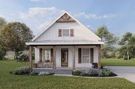

This is my homepage!
This is my first ever website,Not very fancy I know. Nontheless I am quite proud of it so please dont judge. Also here is a picture of a random house.A homepage is the gateway to a website, setting the tone for what visitors can expect. It serves as the digital front door, providing easy navigation, key information, and a snapshot of the site's purpose. A well-designed homepage should be visually engaging, user-friendly, and informative, guiding users seamlessly to relevant content. Whether it's a personal blog, a business website, or an online store, the homepage is crucial in making a strong first impression. With intuitive design and compelling visuals, it can enhance user experience and encourage exploration. A homepage isn't just a static page—it evolves to reflect updates, trends, and changing needs, ensuring visitors find value every time they return.
